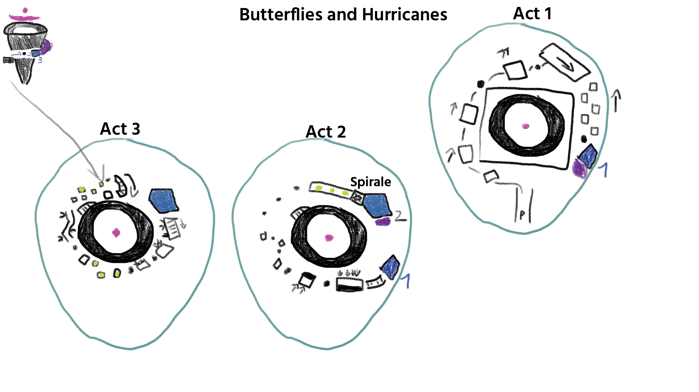
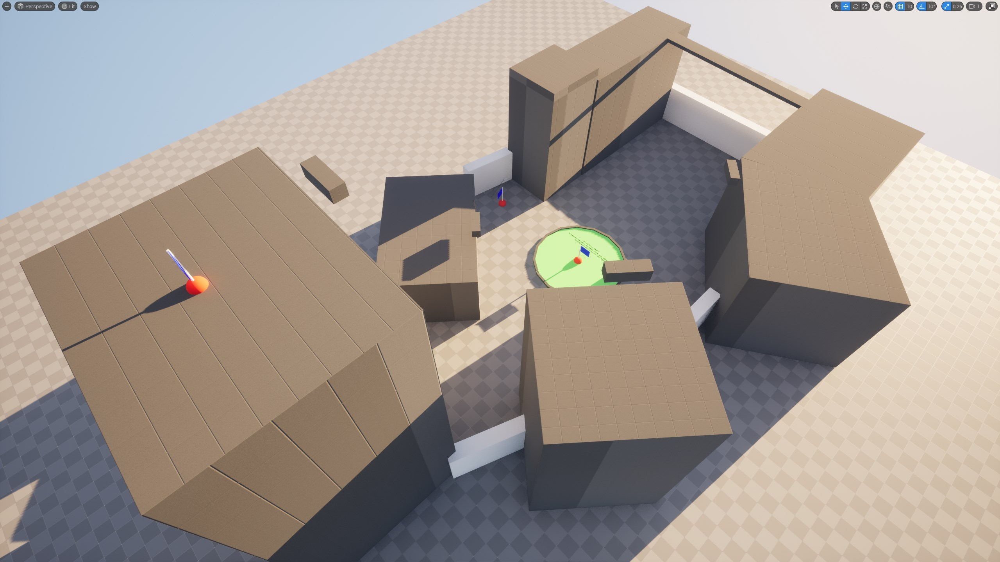
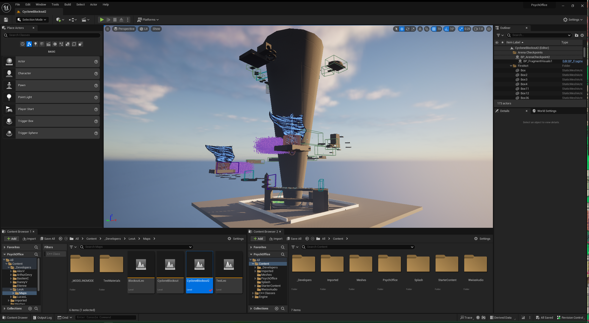

In Life, Heart and Mind
Présentation et déroulement du projet.
Présentation
- Équipe de 10
- 4 mois
- Exercice du master JMIN
- Unreal Engine 5, Perforce
In Life, Heart and Mind est un action-platformer à la 3ème personne. Incarnez Ilham, évoluant dans un monde surréaliste et corrompu, cherchant à reconstuire sa tête brisée en morceaux.
Déroulement du projet
Le pitch a été proposé par Roman Grzegorzewski, l'autre Game Designer du projet. Nous voulions au départ faire un jeu en combat d'arène parlant de manière littérale de dépression et du suivi par le protagoniste d'une thérapie cognitivo-comportementale, avec un contrôleur réactif, très physique dans ses feedbacks et plaisant à prendre en main. Cette version a été abandonnée un mois plus tard après la première soutenance où nous avons présenté nos intentions devant un jury de professionnels, qui nous a dit de revoir le pitch de fond en comble.
Dès lors, nous avons pris de mi-novembre à mi-décembre pour conceptualiser un nouveau jeu. Une réunion d'une journée aura été nécessaire pour définir quelles seront les intentions de base avant de partir sur de nouvelles mécaniques ou adapter celles déjà implémentées dans le moteur.
Sur le projet, j'ai pris la charge du Level Design et une partie du Narrative Design. La narration a nouri le Game Design et inversement. Les mécaniques ont été majoritairement réfléchies par Roman, avec quelques suggestions et ajustements de ma part.
Level Design
Les premières ébauches de level design ont été réalisées durant la phase de pré-production du chapitre, sur Photoshop.
Le dessin n'étant clairement pas mon fort, ce mockup me sert surtout à garder une trace de mes intentions pour pouvoir les présenter oralement à Roman et les programmeurs à des fins de validation. Vu le peu de temps qu'il nous restait, j'ai préféré itérer rapidement que faire une documentation propre de mon layout, expliquant ainsi pourquoi beaucoup de choses devant y figurer n'y sont tout simplement pas.
Le Modeling Mode d'Unreal associé au plugin Mesh Tool m'ont permis d'itérer rapidement sur un blockout.

Mon objectif principal dans ce niveau était de rendre l'introduction aux mécaniques fluide, sans tutoriel. Pour ce faire, chaque mécanique est introduite dans son propre beat avec des sécurités (murs et murets, escaliers pour remonter...), jusqu'à ce que je considère la mécanique suffisamment comprise (3 à 4 segments par beat) pour enlever ces sécurités et laisser les joueurs maîtriser le contrôleur.
Bien que ce ne soit pas dans les intentions du jeu, il est possible de speedrunner le niveau voire de l'encourager. Le workflow avec notre 3D Artist permet de rapidement ajouter de nouveaux meshes pour accomoder des raccourcis potentiels, tandis qu'une générosité dans la taille des activateurs pour le vent permettent de passer une partie du niveau et atteindre la fin plus rapidement.
Voici notre soutenance finale du projet (en anglais, timecodé) :